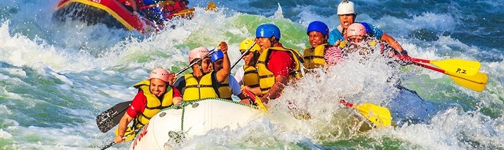
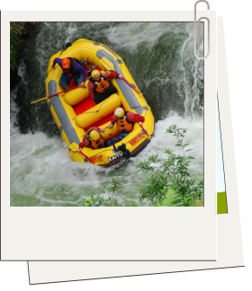
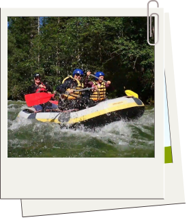
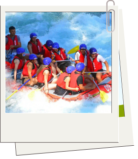
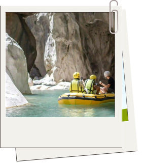
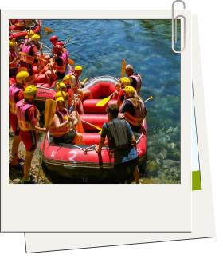

TRIPS

5 Incredible Adventures!
We offer a range of trips to cater for every
thrill seeking adventurer (details and pricing below)
Deepfall Descent
Short, sharp, and packed with action!
read more...
Deepfall Descent is a fast, intense one‑hour run that drops you straight into
a narrow canyon packed
with quick‑fire rapids. Expect sharp turns, sudden drops, and nonstop
adrenaline from start to
finish — no slow sections, just pure white‑water action guided safely by our
trained team.

Evergreen Rapids
A balanced blend of excitement and scenery.
read more...
Evergreen Rapids is our signature two‑hour adventure for all levels. You’ll
wind through forested
corridors, splash through lively Class II–III rapids, and enjoy calm
stretches perfect for taking in
the towering evergreens. With expert guides and plenty of scenic moments,
it’s the ideal mix of
excitement, beauty, and river fun.

Bluewater Rush
A fun and energetic ride with plenty of variety.
read more...
Bluewater Rush offers bright, open water, playful waves, and moderate Class
II–III rapids that keep you smiling from the
first splash to the final stretch. You’ll carve through wide channels,
bounce through rolling wave
trains, and enjoy calm moments in stunning blue pools — a spirited,
approachable adventure for
families and first‑timers.

Echo Hollow Drift
Towering canyon walls with natural acoustics and dramatic
scenery.
read more...
Echo Hollow Drift mixes steady paddling with bursts of excitement
through smooth channels
and moderate rapids. The narrow canyon amplifies every splash as you move
between shadowed corridors
and sunlit openings — a memorable blend of beauty and challenge for
adventurous beginners and
intermediates.

Clearwater Glide
A calm, refreshing journey without the intensity of big
rapids.
read more...
Clearwater Glide drifts through clear pools, quiet inlets, and forested
bends with beautiful views
along the way. You’ll pass smooth rock shelves, spot local wildlife, and
enjoy calm, scenic water —
a perfect choice for families, first‑timers, or anyone wanting a peaceful,
fun escape.

READY TO BOOK?
Your next great memory is waiting on the river — all you need to do is take the
first step. If youre ready to plan an amazing and unforgettable experience, head
over to
our Contact Us page or click on the link below and
we'll help you get everything set
up.
Contact Us
Trip Prices
|
Trip Name
|
Duration
|
Difficulty
|
Price
|
Age
|
Availability
|
|
Deepfall Descent
|
1 Hour
|
Advanced
|
$150 pp
|
12+
|
Weekends
|
|
Evergreen Rapids
|
1.5 Hours
|
Intermediate
|
$120 pp
|
10+
|
Daily
|
|
Bluewater Rush
|
1.5 Hours
|
Beginner-Intermediate
|
$130 pp
|
8+
|
Daily
|
|
Clearwater Glide
|
2 Hours
|
Beginner
|
$90 pp
|
6+
|
Daily
|
|
Echo Hollow Drift
|
2 Hours
|
Intermediate-Advanced
|
$100 pp
|
12+
|
Weekends & Holidays
|